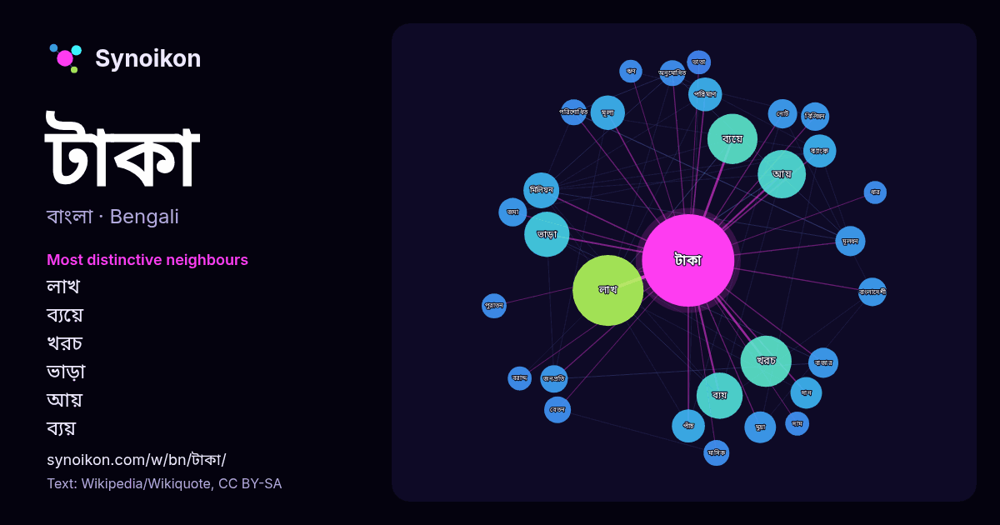

বাংলা · জনপ্রিয় শব্দ
টাকা
“money” · উইকিপিডিয়া, Wikiquote থেকে 1369টি প্রয়োগে এর চারপাশে পাওয়া শব্দ।

সবচেয়ে স্বতন্ত্র প্রতিবেশী
- লাখ 68×
- ব্যয়ে 46×
- খরচ 35×
- ভাড়া 33×
- আয় 29×
- ব্যয় 28×
- মূল্য 18×
- মূলধন 18×
- জনপ্রতি 16×
- নোট 16×
- মুদ্রা 16×
- পরিশোধিত 14×
- ব্যাংক 14×
- বেতন 13×
- ভাতা 12×
- দান 12×
- জমা 12×
- বিলিয়ন 12×
- মাসিক 11×
- অনুমোদিত 11×
× = সাধারণ উইকিপিডিয়া টেক্সটের চেয়ে কত গুণ বেশি।
সবচেয়ে ঘন ঘন প্রতিবেশী
- লাখ 106
- খরচ 55
- ব্যয়ে 53
- আয় 49
- ব্যয় 45
- ভাড়া 43
- মিলিয়ন 27
- মূল্য 25
- পরিমাণ 24
- সরকার 24
- পাঁচ 23
- ব্যাংক 23
- ভারতীয় 22
- দান 21
- মাসে 21
- মুদ্রা 21
- সালের 20
- নাম 19
- পুরস্কার 19
- বাজার 19
প্রসঙ্গে
- বাংলাদেশি টাকা (মুদ্রা প্রতীক: ৳; ব্যাংক কোড: BDT) হল বাংলাদেশের মুদ্রা। ১৯৭১ সালে বাংলাদেশের স্বাধীনতার পর দেশটির মুদ্রা হিসেবে "টাকা" প্রতিষ্ঠিত হয়। Wikipedia snippets · বাংলাদেশী টাকা
- চলচ্চিত্রগুলো ওয়েব্যাক মেশিনে আর্কাইভকৃত ২৮ ডিসেম্বর ২০১২ তারিখে চলচ্চিত্র প্রবেশদ্বার ইন্টারনেট মুভি ডেটাবেজে টাকা (ইংরেজি) বাংলা মুভি ডেটাবেজে টাকা Wikipedia snippets · টাকা (চলচ্চিত্র)
- টাকা আনা পাই ১৯৭০ সালে মুক্তিপ্রাপ্ত বাংলাদেশী চলচ্চিত্র। বাংলাদেশের বিখ্যাত লেখক ও চলচ্চিত্রকার জহির রায়হানের লেখা চলচ্চিত্রটি পরিচালনা করেছেন বাবুল Wikipedia snippets · টাকা আনা পাই
- টাকি বলতে বোঝানো হতে পারে - টাকি/টাকী - ভারতের পশ্চিমবঙ্গে অবস্থিত একটি গঞ্জ এলাকা; টাকি - এক প্রকার মাছবিশেষ; টাকি - একটি ফরাসি শব্দ; টাকি - একটি স্প্যানিশ Wikipedia snippets · টাকি (দ্ব্যর্থতা নিরসন)
- বয়সী। নির্মল বসু (৭ আগস্ট ২০১৪)। "টাকি পুরসভার ভাড়া বাড়ি সারাতে খরচ হয় ৭০ টাকা"। আনন্দবাজার পত্রিকা। সংগ্রহের তারিখ ২৭ মার্চ ২০১৬। "Taki"। Falling Rain Wikipedia snippets · টাকি, উত্তর চব্বিশ পরগনা
- 'টঙ্কা' বা 'টাকা' হিসেবে পরিচিতি প্রদান করেন। দিল্লির সুলতান ইলতুতমিশ তার স্বর্ণ ও রৌপ্য মুদ্রার নাম দিয়েছিলেন 'তানকাহ' বা 'টাকা'। এছাড়াও 'ট … Wikipedia snippets · বাংলাদেশ ব্যাংক টাকা জাদুঘর
- ভারতীয় পাঁচশত এবং এক হাজার টাকা নোটের মুদ্রারহিতকরণ (নোট বাতিল নামে সংবাদমাধ্যমে বিখ্যাত) ভারতে ক্রমবর্ধমান দুর্নীতি ও কালো টাকা সমস্যার সমাধানের অভিমুখে Wikipedia snippets · ভারতীয় পাঁচশত এবং এক হাজার টাকা নোটের মুদ্রারহিতকরণ
- ডাক টাকা মূলত একটি ডিজিটাল টাকার ঝুলি (ম্যানিব্যগ/ওয়ালেট)। এই ডাক টাকা ব্যাংকিংয়ের দ্বারা সাধারণ মানুষের ঘরে বসে মোবাইল ও অ্যাপের মাধ্যমে টাকা লেনদেন Wikipedia snippets · ডাক টাকা
আরও শব্দ
- অরণ্য
- আয়না
- ইতিহাস
- ঈশ্বর
- কাজ
- কুকুর
- ক্ষমতা
- খাদ্য
- গান
- গ্রীষ্ম
- ঘড়ি
- ঘণ্টা
- ঘোড়া
- ছায়া
- জননী
- জলবায়ু
- জীবন
- ঝড়
- ট্রেন
- দারুচিনি
- দ্বীপ
- নক্ষত্র
- নীরবতা
- পরিবার
- পানি
- পাহাড়
- প্রকৃতি
- বাগান
- বিজ্ঞান
- বিড়াল
- বৃষ্টি
- ভাষা
- মধু
- মরুভূমি
- মানচিত্র
- মৃত্যু
- রাস্তা
- রুটি
- লবণ
- শরৎ
- শহর
- শিল্প
- শীত
- সত্য
- সময়
- সেতু
- সোনা
- স্বাস্থ্য
- হৃদয়
2026-10-09 তারিখে ডিফল্ট সেটিংসে (±5 শব্দ, মাঝারি কর্পাস) আগে থেকে গণনা করা। ইন্টারঅ্যাক্টিভ মানচিত্র লাইভ ডেটা দিয়ে এটি হালনাগাদ করতে পারে।
যন্ত্রে অনূদিত ইন্টারফেস; সংশোধন স্বাগত।